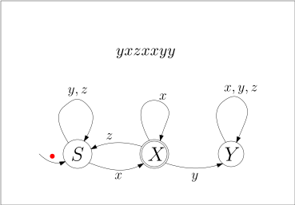
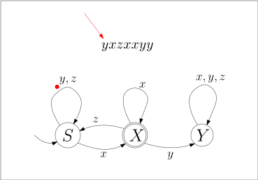
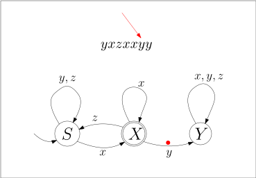

<div id="rightSideWrapper">

        <div class="content">
            <div class='chapter'>
                <div class='subChapter'>
                    <h1 class='hidden-title'>
                        <span class='subChapterTitle'>4.2 Endliche Automaten</span>
                    </h1>

                    <p>
                        Grammatiken erlauben es uns, gewisse Formate zu beschreiben. Das reicht uns aber nicht:
                        wir wollen Daten <em>parsen</em>, im engen Sinne also eine grammatische Ableitung rekonstruieren
                        und allgemein die Struktur eines gegebenen Wortes herausarbeiten. Ein bescheideneres Ziel
                        ist es, für ein gegebenes Wort zu <em>entscheiden</em>, ob es sich überhaupt aus einer Grammatik
                        ableiten lässt. Für reguläre Grammatiken gibt es hierfür die <em>endlichen Automaten</em>. Sie
                        können
                        endliche Automaten verstehen als ein eingeschränktes Modell eines Rechners;
                        oder als Blaupause für einen effizienten Algorithmus, um reguläre Grammatiken zu parsen.
                    </p>
                    <p>Hier sehen Sie ein Beispiel für einen endlichen Automaten über dem Alphabet \(\Sigma =
                        \{x,y,z\}\). Die Idee ist,
                        dass der Automat ein Wort \(\alpha\) Zeichen für Zeichen einliest. Die Pfeile zwischen den
                        Kreisen (den
                        <em>Zuständen</em> des Automaten) zeigen an, in welchen neuen Zustand beim Lesen eines Zeichen
                        gewechselt werden
                        muss. Der Pfeil "aus dem Nichts", hier der von links nach \(S\), zeigt den <em>Startzustand</em>
                        an, in welchem
                        der Automat beginnt.
                    </p>
                    <figure>
                        
                    </figure>
                    <p>
                        Um zu zeigen, wie der Automat ein Eingabewort verarbeitet, nehmen wir das Beispiel \(\alpha =
                        yxzxxyy\).
                    </p>
                    <figure class='centered-figure well container'>
                        <a class='left carousel-control-prev-icon' href='#fsa-example-01' data-slide='prev'>
                            <div class='carousel-nav-icon'>
                                
                            </div>
                        </a>
                        <a class='right carousel-control-next-icon' href='#fsa-example-01' data-slide='next'>
                            <div class='carousel-nav-icon'>
                                
                            </div>
                        </a>
                        <div id='fsa-example-01' class='carousel' data-interval='false' style='display:inline-block'>
                            <ol class='carousel-indicators'>
                                <li data-target='#fsa-example-01' data-slide-to='1' class='active'></li>
                                <li data-target='#fsa-example-01' data-slide-to='2'></li>
                                <li data-target='#fsa-example-01' data-slide-to='3'></li>
                                <li data-target='#fsa-example-01' data-slide-to='4'></li>
                                <li data-target='#fsa-example-01' data-slide-to='5'></li>
                                <li data-target='#fsa-example-01' data-slide-to='6'></li>
                                <li data-target='#fsa-example-01' data-slide-to='7'></li>
                                <li data-target='#fsa-example-01' data-slide-to='8'></li>
                                <li data-target='#fsa-example-01' data-slide-to='9'></li>
                                <li data-target='#fsa-example-01' data-slide-to='10'></li>
                                <li data-target='#fsa-example-01' data-slide-to='11'></li>
                                <li data-target='#fsa-example-01' data-slide-to='12'></li>
                                <li data-target='#fsa-example-01' data-slide-to='13'></li>
                                <li data-target='#fsa-example-01' data-slide-to='14'></li>
                                <li data-target='#fsa-example-01' data-slide-to='15'></li>
                                <li data-target='#fsa-example-01' data-slide-to='16'></li>
                                <li data-target='#fsa-example-01' data-slide-to='17'></li>
                                <li data-target='#fsa-example-01' data-slide-to='18'></li>
                                <li data-target='#fsa-example-01' data-slide-to='19'></li>
                                <li data-target='#fsa-example-01' data-slide-to='20'></li>
                                <li data-target='#fsa-example-01' data-slide-to='21'></li>
                                <li data-target='#fsa-example-01' data-slide-to='22'></li>
                                <li data-target='#fsa-example-01' data-slide-to='23'></li>
                                <li data-target='#fsa-example-01' data-slide-to='24'></li>
                                <li data-target='#fsa-example-01' data-slide-to='25'></li>
                            </ol>
                            <div class='carousel-inner' style='display:inline-block'>
                                <div class='item active'></div>
                                <div class='item'></div>
                                <div class='item'></div>
                                <div class='item'></div>
                                <div class='item'></div>
                                <div class='item'></div>
                                <div class='item'></div>
                                <div class='item'></div>
                                <div class='item'></div>
                                <div class='item'></div>
                                <div class='item'></div>
                                <div class='item'></div>
                                <div class='item'></div>
                                <div class='item'></div>
                                <div class='item'></div>
                                <div class='item'></div>
                                <div class='item'></div>
                                <div class='item'></div>
                                <div class='item'></div>
                                <div class='item'></div>
                                <div class='item'></div>
                                <div class='item'></div>
                                <div class='item'></div>
                                <div class='item'></div>
                                <div class='item'></div>
                            </div>
                        </div>
                    </figure>
                    <p>
                        In diesem Beispiel endet der Automat im Zustand \(Y\). Sie sehen, dass der Zustand \(X\)
                        mit einem doppelten Rand markiert ist: dies symbolisiert, dass \(X\) ein <em>akzeptierender</em>
                        Endzustand ist. Wenn der Automat ein Wort \(\alpha\) abgearbeitet hat, <em>akzeptiert</em> er
                        es,
                        wenn er in einem akzeptierenden Endzustand gelandet ist; ansonsten <em>lehnt er es ab</em>. In
                        unserem
                        Beispiel sehen wir also, dass der Automat das Eingabewort \(yxzxxyy\) ablehnt.
                    </p>

                    <div class='well container theorem'>
                        <span class='numbered-title' id="definition-finite-state-machine"
                            data-label-title="Definition">Definition</span>
                        <strong>(Endlicher Automat, Finite State Machine).</strong>
                        Ein endlicher Automat besteht aus einem endlichen Eingabealphaet \(\Sigma\), einer endlichen
                        Menge \(Q\) von Zuständen,
                        einem Startzustand \(\qstart \in Q\), einer Menge \(F \subseteq Q\) von akzeptierenden
                        Endzuständen
                        und einer
                        Zustandsübergangsfunktion
                        \begin{align*}
                        \delta : Q \times \Sigma \rightarrow Q \ .
                        \end{align*}
                        Formal gesehen ist also ein Automat ein Quintupel \(M = (\Sigma, Q, \qstart, F, \delta)\).
                    </div>
                    <p>
                        Die Idee ist, dass der Automat im Zustand \(\qstart\) startet und nun in jedem Schritt ein
                        weiteres
                        Zeichen des Eingabewortes liest. Wenn er im Zustand \(q\) ist und das Zeichen \(x\) liest,
                        so wechselt er in den Zustand \(\delta(q,x)\). Statt \(\delta(q,x) = q'\) verwenden wir die
                        leichter zu lesende Schreibweise
                        $$
                        q \stackrel{x}{\rightarrow} q' \ .
                        $$
                        Wenn das Wort zu Ende ist, dann <em>akzeptiert</em>
                        der Automat, wenn er in einem akzeptierenden Zustand angekommen ist, also in \(F\).
                    </p>
                    <div class='well container theorem'>
                        <span class='numbered-title'>Beispiel</span>
                        Betrachten wir den endlichen Automaten
                        <figure>
                            
                        </figure>
                        und stellen ihn gemäß
                        <span class="reference" data-ref="definition-finite-state-machine"></span>
                        als Quintupel \(M = (\Sigma, Q, \qstart, F, \delta)\) dar mit
                        \begin{align*}
                        \Sigma & = \{x,y,z\} \\
                        Q & = \{S, X, Y\} \\
                        \qstart & = S \\
                        F & = \{X\} \ .
                        \end{align*}
                        <p>
                            Um noch die Zustandsübergangsfunktion $\delta$ darzustellen, müssen wir uns überlegen,
                            wie wir Funktionen überhaupt darstellen. Da $\delta$ eine endliche Funktion ist,
                            können wir einfach alle Eingabewert-Ausgabewert-Paare hinschreiben, am Besten
                            in einer Tabelle, so wie wir es bereits bei Booleschen Funktionen mit
                            Wahrheitstabellen getan haben. $\delta$ ist also
                        </p>
                        \begin{align*}
                        \begin{array}{cc|c}
                        q & \sigma & \delta(q,x) \\ \hline
                        S & x & X \\
                        S & y & S \\
                        S & z & S \\
                        X & x & X \\
                        X & y & Y \\
                        X & z & S \\
                        Y & x & Y \\
                        Y & y & Y \\
                        Y & z & Y
                        \end{array}
                        \end{align*}
                        <p>
                            Da die Funktion $\delta$ bei jedem endlichen Automaten genau zwei
                            Eingabeparameter hat, können wir es eventuell übersichtlicher als
                            zweidimensionale Tabelle darstellen:
                        </p>
                        \begin{align*}
                        \begin{array}{c|c|c|c}
                        & x & y & z \\ \hline
                        S & X & S & S \\ \hline
                        X & X & Y & S \\ \hline
                        Y & Y & Y & Y
                        \end{array}
                        \end{align*}
                        <p>Diese zwei Tabellen dienen in diesem Beispiel aber nur dazu, noch einmal
                            zu illustrieren, was ich damit meine, wenn ich sage, dass
                            $\delta$ eine Funktion von $Q \times \Sigma$ nach $Q$ ist. Wenn Sie
                            selbst an endlichen Automaten rumbasteln, empfehle ich Ihnen,
                            die Funktion $\delta$ graphisch mit Kreisen und Pfeilen darzustellen,
                            so wie wir es oben getan haben:
                        </p>
                        <figure>
                            
                        </figure>
                        <p>
                            Das ist eine völlig legitime Notation für eine Funktion $\delta: Q \times \Sigma \rightarrow
                            Q$
                            und genau so formal wie die Tabellenschreibweise.
                        </p>
                    </div class='well container theorem'>
                    <div class='well container theorem'>
                        <span class='numbered-title'>Definition</span>
                        <strong>(Erweiterte Zuständsübergangsfunktion)</strong>.
                        Für einen endlichen Automaten \((\Sigma, Q, \qstart, F, \delta)\) definieren wir
                        die <em>erweiterte Zustandsübergangsfunktion</em> \(\hat{\delta}: Q \times \Sigma^* \rightarrow
                        Q\) rekursiv wie folgt:
                        \begin{align*}
                        \hat{\delta} (q, \epsilon) & = q \\
                        \hat{\delta} (q, x\alpha) & = \hat{\delta} (\delta(x), \alpha) \ .
                        \end{align*}
                        \(\hat{\delta} (q, \alpha) = q'\) heißt also, dass der Automat, wenn er sich im Zustand \(q\)
                        befindet
                        und das Wort \(\alpha\) abarbeitet, er danach im Zustand \(q'\) landet. Wir schreiben auch
                        kompakt
                        $$
                        q \stackrel{\alpha}{\rightarrow} q' \ .
                        $$
                    </div class='well container theorem'>

                    <div class='well container theorem'>
                        <span class='numbered-title'>Definition</span>
                        <strong>
                            (Akzeptierte Sprache).
                        </strong>
                        Sei \(M = (\Sigma, Q, \qstart, F, \delta)\) ein endlicher Automat. Die von \(M\) akzeptierte
                        Sprache
                        ist
                        \begin{align*}
                        L(M) := \{ \alpha \in \Sigma \ | \ \hat{\delta}(\qstart, \alpha) \in F \} \ .
                        \end{align*}
                    </div class='well container theorem'>

                    <div class='well container theorem'>
                        <span class='numbered-title'>Beispiel</span>
                        Der endliche Automat, den wir oben bereits eingeführt haben:
                        <figure>
                            
                        </figure>
                        akzeptiert die Sprache aller \(\alpha \in \{x,y,z\}\), die auf \(x\) enden und nicht die
                        Buchstabenfolge \(xy\) enthalten.
                    </div class='well container theorem'>

                    <div class='well well-lg numbered-exercise container'>
                        <span class='numbered-title'>Übungsaufgabe</span>
                        Ändern Sie den Automaten aus dem letzten Beispiel so ab, dass die Bedingung <em>"die auf \(x\)
                            enden"</em> entfällt, er also
                        alle Wörter akzeptiert, die die Folge \(xy\) nicht enthalten.
                    </div>


                    <div class='well well-lg numbered-exercise container'>
                        <span class='numbered-title'>Übungsaufgabe</span>
                        Zeichnen Sie einen Automaten für die Sprache aller Wörter über \(\{a,b,c,d\}\), die
                        die Folge \(a,b,c,d\) enthalten.
                    </div>

                    <div class='well well-lg numbered-exercise container'>
                        <span class='numbered-title'>Übungsaufgabe</span>
                        Zeichnen Sie einen Automaten für die Sprache aller Wörter über \(\{a,b,c,d\}\), die
                        genau vier \(a\) enthalten.
                    </div>


                    <h2>Endliche Automaten zu regulären Grammatiken</h2>

                    Wenn wir einen endlichen Automaten gegeben haben, dann können wir leicht eine entsprechende reguläre
                    Grammatik
                    dazu bauen, indem wir alle Pfeile einfach in Produktionen übersetzen. Für den Automaten
                    <figure>
                        
                    </figure>
                    würde dies beispielsweise die folgenden Produktionen ergeben:
                    \begin{align*}
                    S & \rightarrow y S \ | \ zS \ | \ x X \\
                    X & \rightarrow x X \ | \ z S \ | \ y Y \\
                    Y & \rightarrow x Y \ | \ y Y \ | \ z Y \\
                    \end{align*}
                    und, weil \(X\) ein akzeptierender Zustand ist,
                    \begin{align*}
                    X & \rightarrow \epsilon
                    \end{align*}

                    Dies geht ganz allgemein:

                    <div class='well container theorem' id="theorem-fsm-regular">
                        <span class='numbered-title'>Theorem</span>
                        Sei \(M = (\Sigma, Q, \qstart, F, \delta)\) ein endlicher Automat. Dann gibt es eine reguläre
                        Grammatik
                        \(G = (\Sigma, N, P, S)\) mit \(L(G) = L(M)\).
                    </div class='well container theorem'>
                    <p>
                        Wir nehmen dies als Anlass, um mal wieder einen Induktionsbeweis im Detail durchzuführen.
                    </p>
                    <div class='well container'>
                        <strong>Beweis.</strong>
                        Wir setzen \(N = Q\) und \(S = \qstart\) und führen für jeden Zustandsübergang, der von
                        \(\delta\) beschrieben wird, eine Ableitungsregel ein:
                        \begin{align*}
                        q_1 \stackrel{x}{\rightarrow} q_2 & \quad \textnormal{ wird zur Produktion } \quad
                        q_1 \rightarrow xq_2
                        \end{align*}
                        Hiermit erhalten wir eine "Zwischengrammatik" \(G'\). Die endgültige Grammatik \(G\) erhalten
                        wir,
                        indem wir für jeden akzeptierenden Zustand \(q \in N\) die Produktion
                        \begin{align*}
                        q \rightarrow \epsilon
                        \end{align*}
                        einführen. Wir zeigen nun per Induktion:
                        <div class='well subtheorem theorem'>
                            <span class='numbered-title'>Behauptung</span>
                            Sei \(\alpha \in \Sigma^*\) und \(q, q' \in Q\). Dann gilt
                            \(q \stackrel{\alpha}{\rightarrow} q'\) genau dann,
                            wenn \(q \Rightarrow^* \alpha q'\) in Grammatik \(G'\) gilt.
                        </div class='well container theorem'>

                        <p>
                            Bevor wir diese Behauptung beweisen, achten Sie auf die Bedeutung der Symbole. Der
                            einfache Pfeil in \(q \stackrel{\alpha}{\rightarrow} q'\) beschreibt die Arbeitsweise des
                            endlichen Automaten, dass nämlich
                            das Verarbeiten von \(\alpha\) den Automaten vom Zustand \(q\) in den Zustand \(q'\) führt.
                            Der doppelte Pfeil in \(q \Rightarrow^* \alpha q'\) sagt aus, dass aus dem
                            Nichtterminalsymbol
                            \(q\) in der Grammatik
                            \(G\) in möglicherweise mehreren Schritten die Wortform \(\alpha q'\) abgeleitet werden
                            kann.
                            Der Pfeil \(\rightarrow\) "lebt" also im Automaten \(M\), der Pfeil \(\Rightarrow^*\) lebt
                            in
                            der Grammatik \(G'\).
                        </p>

                        <div class='well subtheorem'>
                            <strong>Beweis.</strong>
                            Wir verwenden Induktion über die Länge des Wortes \(\alpha\).
                            <p><strong>Induktionsbasis.</strong> Wenn \(\alpha = \epsilon\) gilt, also \(\alpha\) die
                                Länge 0 hat, dann
                                gilt \(q \stackrel{\epsilon}{\rightarrow} q'\) genau dann, wenn \(q = q'\) ist. Wie kann
                                nun
                                \(q \Rightarrow^* \epsilon q'\) in \(G'\) gelten? Beachten Sie, dass jede Produktion in
                                \(G'\) ein Terminalsymbol
                                erzeugt; \(q \Rightarrow^* \epsilon q'\) kann also nur gelten, wenn <em>keine</em>
                                Produktion erfolgt ist und somit
                                \(q = q'\) gilt. Wir sehen: beide Aussagen sind äquivalent zu \(q = q'\) und somit auch
                                äquivalent zueinander.
                            </p>

                            <p><strong>Induktionsschritt</strong>. Wenn \(\alpha\) die Länge \(n+1\) hat, so schreiben
                                wir \(\alpha = x \beta\)
                                für ein Wort \(\beta \in \Sigma^*\) der Länge \(n\). Per Induktionshypothese können wir
                                nun davon ausgehen, dass für alle
                                \(q_1, q_2 \in Q\) die Aussage \(q_1 \stackrel{\beta}{\rightarrow} q_2\) genau dann
                                gilt,
                                wenn \(q_1 \Rightarrow^* \beta q_2\) gilt.
                                Unser Ziel ist es, zu zeigen, dass die beiden folgenden Aussagen äquivalent sind:
                            <ol>
                                <li>
                                    \(q \stackrel{x \beta}{\rightarrow} q'\) im endlichen Automaten \(M\),
                                </li>
                                <li>
                                    \(q \Rightarrow^* x \beta q'\) in der Grammatik \(G'\).
                                </li>
                            </ol>
                            Wir müssen beide Richtungen zeigen, also zeigen, dass aus Aussage (1) die Aussage (2) folgt
                            und umgekehrt.
                            </p>
                            <p><strong>Aus (1) folgt (2).</strong> Nehmen wir also an, dass
                                \(q \stackrel{x \beta}{\rightarrow} q'\) gilt und bezeichnen
                                \(q_1 := \delta(q,x)\). Es gilt also
                                $$
                                q \stackrel{x}{\rightarrow} q_1 \stackrel{\beta}{\rightarrow} q'
                                $$
                                Der erste Teil, also \(q \stackrel{x}{\rightarrow} q_1\), bedeutet, dass wir in \(G'\)
                                die Produktion
                                \(q \rightarrow xq_1\) eingeführt haben.
                                Auf den zweiten Teil, also \(q_1 \stackrel{\beta}{\rightarrow} q'\), können
                                wir die Induktionshypothese anwenden und schließen, dass
                                \(q_1 \Rightarrow^* \beta q'\) gilt. Nun können wir mit dem Nichtterminal \(q\)
                                beginnen,
                                die Produktion \(q \rightarrow x q_1\) anwenden und dann mit \(q_1\) fortfahrend die
                                Wortform
                                \(\beta q'\) ableiten, also
                                $$
                                q \Rightarrow x q_1 \Rightarrow^* x \beta q' \ .
                                $$
                                Dies zeigt die erste Richtung.
                            </p>

                            <p><strong>Aus (2) folgt (1).</strong>
                                Nun nehmen wir an, dass \(q \Rightarrow^* x \beta q'\) gilt. Untersuchen wir die erste
                                Produktion, die in dieser
                                Ableitung verwendet worden ist. Alle Produktionen in \(G'\) erzeugen ein Terminalsymbol,
                                also muss es eine
                                Produktion der Form
                                $$
                                q \rightarrow x q_1
                                $$
                                gewesen sein. Die Ableitung hat also die Form
                                \begin{align*}
                                q \Rightarrow x q_1 \Rightarrow^* x \beta q' \ ,
                                \end{align*}
                                wir können also aus \(q_1\) die Wortform \(\beta q'\) ableiten: \(q_1 \Rightarrow^*
                                \beta q'\). Auf diese
                                Erkenntnis wenden wir die Induktionshypothese an und schließen, dass
                                $$
                                q_1 \stackrel{\beta}{\rightarrow} q'
                                $$
                                gilt. Die Produktionsregel \(q \rightarrow x q_1 \) kann nur in \(G'\) eingeführt worden
                                sein, weil
                                \(\delta(q,x) = q_1\), also \(q \stackrel{x}{\rightarrow} q_1\). Somit sehen wir, dass
                                $$
                                q \stackrel{x}{\rightarrow} q_1 \stackrel{\beta}{\rightarrow} q'
                                $$
                                gilt, also zusammengenommen \(q \stackrel{x\beta}{\rightarrow} q'\). Dies zeigt die
                                zweite Richtung.
                            </p>
                            Hiermit endet der Induktionsbeweis.<span class='qed'>\(\square\)</span>
                        </div class='proof'>

                        <p>Wir haben nun die Behauptung bewiesen. Als nächstens betrachten wir die Grammatik \(G\) und
                            behaupten,
                            dass \(L(G) = L(M)\) gilt. Sei \(\alpha \in \Sigma\), dann behaupten wir also, dass wir
                            folgenden
                            zwei Aussagen äquivalent sind:
                        </p>
                        <ol>
                            <li>
                                \(\qstart \stackrel{\alpha}{\rightarrow} q'\) für einen Zustand \(q' \in F\),
                            </li>
                            <li>
                                \(\qstart \Rightarrow^* \alpha\) in Grammatik \(G\).
                            </li>
                        </ol>

                        <p>Wenn nun also \(\qstart \stackrel{\alpha}{\rightarrow} q'\) gilt und \(q' \in F\), dann
                            wissen wir von der obigen Behauptung, dass es in \(G'\) die Ableitung
                            \(\qstart \Rightarrow^* \alpha q'\) gibt. Da \(q' \in F\) ist, enthält \(G\) die
                            Produktion \(q' \rightarrow \epsilon\), und somit können wir in \(G\) die Ableitung
                            \(\qstart \Rightarrow^* \alpha q' \Rightarrow \alpha\) machen.
                        </p>
                        <p>
                            In der anderen Richtung, wenn \(\qstart \Rightarrow^* \alpha\) in Grammatik \(G\) gilt, dann
                            betrachten wir den letzten Ableitungsschritt. Da \(\alpha\) keine Nichtterminalsymbole
                            enthält, muss im letzten Ableitungsschritt ein Nichtterminalsymbol
                            verschwunden sein. Die einzigen Produktionen in \(G\) bei denen das Nichtterminal
                            verschwindet,
                            sind von der Form \(q' \rightarrow \epsilon\), wenn \(q'\) im Automaten \(M\) ein
                            akzeptierender Endzustand ist.
                            Sei nun also \(q' \rightarrow \epsilon\) die Produktion, die im letzten Ableitungsschritt
                            angewendet worden ist.
                            Es gilt also
                            \(\qstart \Rightarrow^* \alpha q' \Rightarrow \alpha\). Beachten Sie nun weiter, dass
                            all jene Produktionen, die in \(G\) aber nicht in \(G'\) sind, die Form \(q' \rightarrow
                            \epsilon\) haben,
                            also das Nichtterminalsymbol verschwinden lassen; es kann in einer Ableitung also nur eine
                            solche Produktion angewandt
                            worden sein, und das ganz zum Schluss. Das heißt: die Ableitung
                            \(\qstart \Rightarrow^* \alpha q'\) verwendet ausschließlich \(G'\)-Produktionen. Somit
                            können
                            wir die oben gezeigte Behauptung anwenden
                            und folgern, dass
                            $$
                            \qstart \stackrel{\alpha}{\rightarrow} q'
                            $$
                            gilt. Dies ist genau Punkt 1, den wir zeigen wollten.
                            <span class='qed'>\(\square\)</span>
                        </p>
                    </div class='proof'>
                    <p>
                        Beachten Sie, dass dieser Beweis eigentlich gar nicht so schwierig ist, wie er hier aussieht.
                        Ich habe
                        ihn absichtlich sehr formal und ausführlich geschrieben, um Ihnen das Prinzip des
                        Induktionsbeweises ins
                        Gedächtnis zu rufen.
                    </p>

                    <div class='well well-lg numbered-exercise container'>
                        <span class='numbered-title'>Übungsaufgabe</span>
                        Schreiben Sie zu folgendem Automaten über dem Alphabet \(\Sigma = \{0,1,2,3,4,5,6,7,8,9\}\) eine
                        äquivalente reguläre Grammatik:
                        <figure>
                            
                        </figure>
                        und beschreiben Sie die Sprache in eigenen Worten.
                    </div>


                    <h2>Reguläre Grammatiken zu endlichen Automaten?</h2>

                    <p>
                        Im letzten Abschnitt haben wir gesehen, wie wir zu einem gegebenen endlichen Automaten recht
                        einfach eine äquivalente
                        reguläre Grammatik schreibne können. Es drängt sich die Frage auf: geht das auch umgekehrt?
                        Versuchen wir es.
                        Zu jedem "Grammatik-Pfeil" \(X \rightarrow aY\) bauen wir uns einen "Automaten-Pfeil" \(X
                        \stackrel{a}{\rightarrow} Y\).
                    </p>
                    <div class='well container theorem'>
                        <span class='numbered-title'>Beispiel</span>
                        Betrachten wir die <a href="./04-01-regular-grammars.html#example-aaabb">reguläre Grammatik aus
                            dem vorherigen Kapitel 4.1</a>:
                        \begin{align*}
                        S & \rightarrow \epsilon \ |\ a S \ | \ b T \\
                        T & \rightarrow \epsilon \ | \ b T \ .
                        \end{align*}
                        <p>Versuchen wir, daraus einen endlichen Automaten zu bauen. Als Zustandsmenge nehmen wir die
                            Menge nichtterminaler Symbole \(\{S,T\}\), als
                            Startzustand das Startsymbol \(S\). Zustandsübergänge ergeben sich aus den
                            Produktionsregeln, wobei wir für Produktionen der Form
                            \(A \rightarrow \epsilon\) den Zustand \(A\) zu einem Endzustand machen. Also:
                        </p>
                        <figure>
                            
                        </figure>
                        <p>
                            Wie Sie sehen, ist das nicht ganz korrekt. Als erstes fällt ins Auge, dass alle Zustände
                            akzeptierende Endzustände sind.
                            Als zweites fällt uns auf, dass es bei \(T\) für das Eingabesymbol \(a\) keinen ausgehenden
                            Pfeil gibt. Der
                            Funktionswert \(\delta(T,a)\) ist also undefiniert. Der Grund hierfür ist, dass, wenn erst
                            mal ein \(b\) vorgekommen ist,
                            eben kein \(a\) mehr vorkommen darf. Die Definition eines endlichen Automaten
                            verlangt aber, dass \(\delta\) eine Funktion ist, also für alle Eingabewerte definiert ist.
                            Wir lösen das, indem wir einen sogenannten <em>Fehlerzustand (Trap State)</em> einführen,
                            der im Prinzip
                            den Zustand
                            <em>lehne das Wort ab, egal, was noch kommt</em> versinnbildlicht:
                        <figure>
                            
                        </figure>
                        Dies ist nun unser endlicher Automat \(M\) mit \(L(M) = L(G)\).
                        </p>
                    </div class='well container theorem'>

                    <div class='well container theorem'>
                        <span class='numbered-title'>Beispiel</span>
                        Betrachten wir die <a href="./04-01-regular-grammars.html#example-xxx1yyy">reguläre Grammatik
                            aus
                            dem vorherigen Kapitel 4.1</a>:
                        \begin{align*}
                        A & \rightarrow 0 A \ | 1 A \ | 1 B \\
                        B & \rightarrow 0 C \ | 1 C \\
                        C & \rightarrow 0 D \ | 1 D \\
                        D & \rightarrow 0 E \ | 1 E \\
                        E & \rightarrow \epsilon \
                        \end{align*}
                        Wobei wir aus dem vorherigen Beispiel lernen und einen Fehlerzustand einführen:
                        <figure>
                            
                        </figure>
                        <p>
                            Leider ist diese Lösung auch nicht korrekt: jetzt gibt es zu viele Pfeile! Aus dem Zustand
                            \(A\) gehen zwei
                            Pfeile mit \(1\) beschriftet hinaus. Wenn wir uns vor Augen halten, was die von \(G\)
                            erzeugte Sprache ist, so
                            wird das Problem klarer: \(G\) erzeugt die Sprache aller Wörter über \(\{0,1\}\), deren
                            <em>viertletztes</em> Zeichen
                            eine 1 ist. Die Herausforderung ist nun: wenn der Automat eine 1 liest, dann weiß er nicht,
                            ob das jetzt schon
                            das viertletzte Zeichen ist oder nicht; er weiß also nicht, ob er im Zustand \(A\) bleiben
                            soll oder weiter
                            zum Zustand \(B\) gehen soll.
                        </p>

                    </div class='well container theorem'>

                    <p>
                        Um mit Fällen wie dem eben geschilderten umgehen zu können, erweitern wir die Definition des
                        endlichen Automaten
                        in nächsten Kapitel zu einem <em>nichtdeterministischen</em> endlichen Automaten.
                    </p>


                </div class="subchapter">

            </div class='chapter'>


        </div class="content">
    </div class="rightSideWrapper">